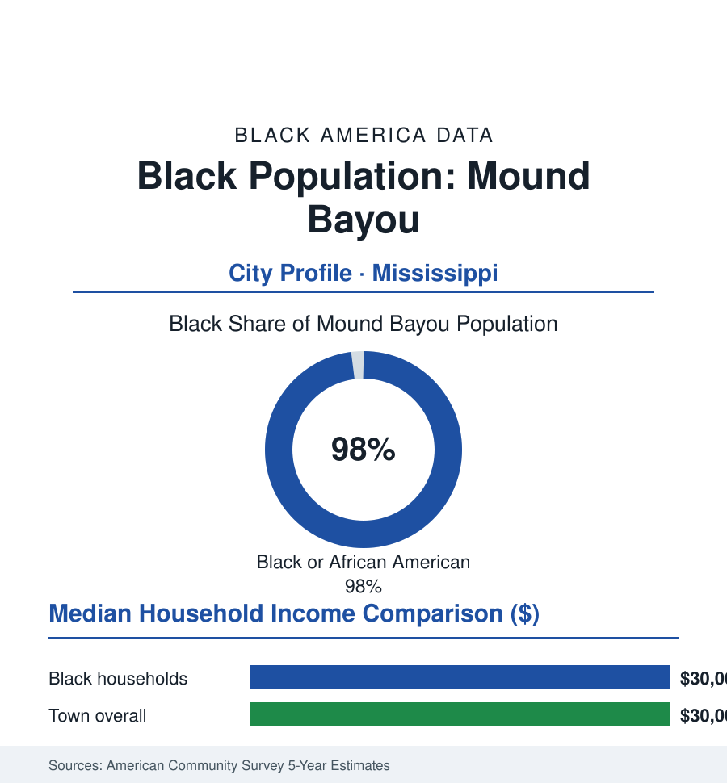

Black Cities
Black Mound Bayou: 1,400 People in the Town Freedom Built for Itself
Founded in 1887 by men born enslaved, Mound Bayou remains almost entirely Black — a Delta town whose hospital, bank, and oil mill wrote a century's proof of concept. The census portrait.

Mound Bayou's Black community numbers roughly 1,400 people — about 98% of the town's residents, as close to a wholly Black municipality as the census records anywhere — in a Delta town founded in 1887 by Isaiah T. Montgomery and his cousin Benjamin Green, men born enslaved on the Davis Bend plantations, who bought wilderness bottomland and built a self-governing Black town on purpose, as an argument. This profile reads the argument's data, 137 years on.
The Founding Argument
The founders brought a template with them: Davis Bend, the peninsula colony where formerly enslaved families had governed their own affairs under Benjamin Montgomery — Isaiah's father, who bought the Davis plantations themselves after emancipation and ran them as a Black enterprise until flood and credit ended the experiment. Mound Bayou was the second attempt, on higher institutional ground: a town this time, with a charter, beyond the reach of any single creditor. The son had watched the first republic drown in debt. He built the second one to be un-foreclosable — and on that narrow point, the record says he succeeded.
The founding is documented like scripture in the state archives: Montgomery — who had run his former enslaver Joseph Davis's plantation affairs, who became the only Black delegate to Mississippi's 1890 constitutional convention and used his seat to plead, controversially then and debated since, for accommodation as survival — platted a town where Black families could own land, vote in municipal affairs, and owe nothing to a landlord. Settlers came by the hundreds to the clearing in the Yazoo-Mississippi Delta: the town incorporated, elected its officers (Montgomery its mayor for over two decades), chartered a bank, built a cottonseed oil mill, a brickyard, sawmills, schools, and churches — the complete institutional shelf of the sovereignty file, assembled in a swamp clearing within a generation of slavery, in a state then perfecting disfranchisement around it. Booker T. Washington held it up to the nation as the race's proof; Theodore Roosevelt, passing through, is remembered in the town record for praising it from the train. The town's twentieth century held the form against the Delta's economics: the boll weevil and the mechanization, the Great Migration drawing its children to Chicago on the Highway 61 line, the population stepping down census by census from its thousands — and the town refusing, at every step, the one transaction that ended other Black towns: it never unincorporated, never sold the premise.
The Taborian Hospital and the Modern Town
Mound Bayou's second founding came in 1942, when the Knights and Daughters of Tabor — a Black fraternal order — opened the Taborian Hospital: a modern hospital built by a Black mutual-aid society in the Jim Crow Delta, staffed by Black physicians (among them, in the town's storied record, Dr. T.R.M. Howard — surgeon, entrepreneur, and civil-rights organizer whose Mound Bayou base made the town a movement address in the 1950s, his home a guarded landmark in the Till era's geography). The hospital's data-era significance is structural: it demonstrated the fraternal-insurance model of the business file operating a full medical institution for a population the state's system served in basements — its surgical and maternity wards drawing patients from across the Delta for three decades until the economics of the 1970s closed it, its building standing in the current record as a clinic and a monument. The modern town's ledger is the Delta's in miniature: roughly 1,400 residents, median household income around thirty thousand dollars, the school consolidated into the county's system in the recent reorganizations (the town fighting, in the public record, for the institutions that remain), the oil mill and the bank gone to history, the economy the county's farm-and-service tiers plus the heritage line — the town's story itself, curated by its historical foundation, drawing the Delta's heritage tourism down Highway 61 to the churches, the cemetery where the founders lie, and the museum rooms. The governance remains what it was in 1887: a Black mayor and board, taxing and deciding for a town that exists because its founders decided Black people would govern somewhere, and wrote it into a plat.
Reading Mound Bayou's Numbers
Ninety-eight percent, 1,400 people, and a charter older than the state's disfranchisement: Mound Bayou is the limiting case of this entire section — sovereignty as a founding intention rather than a demographic accident. Its numbers are small and its ledger is hard, and neither fact has ever moved its premise. The census counts the town. The town, for thirteen decades, has been counting itself — and the count was the point.
More in Black Cities
Black Atlanta: Population, Distribution, and Growth of a Black Metropolis
Metro Atlanta holds more than two million Black residents — roughly one in three, second only to New York. The suburban distribution, migration history, and composition of Black Atlanta in the census data.
Black New York: The Largest Black Population in America
The New York metropolitan area holds about 3.4 million Black residents — more than any metro in the nation — and the city itself about two million. The census profile.
Black Washington: The District and the Metro
The Washington metro holds about 1.6 million Black residents, and the District itself — long a majority-Black city — now records a Black share near 41 percent. The census profile.
Source: U.S. Census Bureau, 2020 Census and American Community Survey 5-year estimates; City of Mound Bayou; Mississippi Department of Archives and History; Taborian Hospital records.